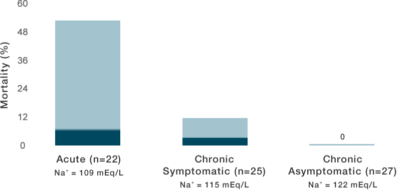

Effects on the Brain
Adverse effects of hyponatremia on the brain
Neurologic complications in hyponatremia are often due to brain edema that is caused by hyponatremia.1-3 Brain edema in hyponatremia is the result of the low extracellular [Na+] causing water to move from outside the cells to inside the cells to keep the extracellular and intracellular osmolalities equal.3
Complications resulting from brain edema include1-3
- Brain-stem herniation
- Coma
- Death
- Permanent brain damage
- Respiratory arrest
- Seizures
High mortality rates that are associated with hyponatremia are often due to osmotically induced brain edema.3,4
Cases when neurologic complications typically occur
Neurologic complications typically only occur in cases of hyponatremia that are severe and rapidly evolving1-3 and in cases of hyponatremia in which the brain is unable to regulate its volume.5
An adaptation process occurs in the brain to ameliorate the cell swelling that takes place in the presence of hyponatremia. The entire adaptation process, which is described below, takes time, and in acute hyponatremia or hyponatremia that is severe and rapidly evolving, the complications from edema occur quicker than the adaptation process.1-3
In other cases in which complications occur, there are factors present that impair the brain’s ability adapt to the edema. Factors that impair adaptation include5:
- Sex (premenopausal females)
- Due to estrogen-inhibiting Na+-K+-ATPase
- Age (prepubescent children)
- Due to a discrepancy between skull size and brain size
- Increased vasopressin
- Hypoxemia
Effects of hypotonic hyponatremia on the brain
The onset of hypotonic hyponatremia immediately causes cells in the brain to swell.1
Immediate Effect
Normal Brain
(normal osmolality)
Water Gain
(low osmolality)
Adaptation of the brain to hypotonic hyponatremia
Within a few hours, the swollen cells in the brain adapt to the swelling by extruding electrolytes from their cytoplasm. Because intracellular and extracellular osmolalites must be equal, the extrusion of electrolytes results in water leaving the cell, causing a decrease in the cell swelling, thereby partially restoring brain volume.1-3
Immediate Effect
Rapid Adaptation
Normal Brain
(normal osmolality)
Water Gain
(low osmolality)
Loss of Sodium, Potassium Chloride
(low osmolality)
Brain volume is fully restored after several days following a loss of organic osmolytes from the cells that result in a further extrusion of water.1,3
Normal Brain
(normal osmolality)
Water Gain
(low osmolality)
Loss of Sodium, Potassium Chloride
(low osmolality)
Loss of Organic Osmolytes
(low osmolality)
Mortality in acute versus chronic hyponatremia
In chronic hyponatremia, the brain has time to adapt to the cell swelling that occurs, so neurologic complications are not often seen because these complications are related to brain edema. In acute hyponatremia, complications arise before the brain has time to adapt.1-3 Because of this, mortality rates are higher in acute hyponatremia.2,3,6
Brain volume regulation accounts for the differences in mortality rates between acute and chronic hyponatremia6
Reprinted from Kleeman CR. The kidney in health and disease: X. CNS manifestations of disordered salt and water balance. Hosp Pract. 1979;14(5):59-68,73. With permission from JTE Multimedia.

Prevalence of Hyponatremia and Diagnostic Considerations
Listen to hospitalist Amir K. Jaffer, MD, speak about the epidemiology of hyponatremia and diagnostic considerations.

Epidemiologic Studies in Hyponatremia
Learn more about the epidemiology of hyponatremia as well as other clinical topics in hyponatremia, by watching a presentation by nephrologist Tomas Berl, MD.
Sign Up for a Hyponatremia Updates Account
With a Hyponatremia Updates account, you can have access to peer-reviewed publications and/or you can stay informed with email updates from Hyponatremia News.
Already have an account? Log In
References
- Upadhyay A, Jaber BL, Madias NE. Incidence and prevalence of hyponatremia. Am J Med. 2006;119(Suppl 1):S30-S35.
- Adrogué HJ, Madias NE. The challenge of hyponatremia. J Am Soc Nephrol. 2012; 23(7):1140-1148.
- Vaidya C, Ho W, Freda BJ. Management of hyponatremia: providing treatment and avoiding harm. Cleve Clin J Med. 2010;77(10):715-726. doi:10.3949/ccjm.77a.08051.
- Douglas I. Hyponatremia: why it matters, how it presents, how we can manage it. Cleve Clin J Med. 2006;73(Suppl 3):S4-S12
- Spasovski G, Vanholder R, Allolio B, et al; Hyponatremia Guideline Development Group. Clinical practice guideline on diagnosis and treatment of hyponatremia. Nephrol Dial Transplant. 2014;29(7 Suppl 2):ii1-ii39. doi:10.1093/ndt/gfu040.
- Verbalis JG, Goldsmith SR, Greenberg A, et al. Diagnosis, evaluation, and treatment of hyponatremia: expert panel recommendations. Am J Med. 2013;126(10 Suppl 1):S1-S42. doi:10.1016/j.amjmed.2013.07.006.
- Reynolds RM, Seckl JR. Hyponatremia for the clinical endocrinologist. Clin Endorinol (Oxf). 2005;63(4):366-374.
- Sterns RH, Cappuccio JD, Silver SM, Cohen EP. Neurologic sequelae after treatment of severe hyponatremia: a multicenter perspective. J Am Soc Nephrol. 1994;4(8):1522-1530.
- Assadi F. Hyponatremia: a problem-solving approach to clinical cases. J Nephrol. 2012; 25(4):473-380. doi:10.5301/jn.5000060.
- Sra J, Repp AB. Hyponatremia. Hosp Med Clin. 2012;1:e199-e208. doi:10.1016/j.ehmc.2012.03.007.
- Renneboog B, Musch W, Vandemergel X, Manto MU, Decaux G. Mild chronic hyponatremia is associated with falls, unsteadiness, and attention deficits. Am J Med. 2006;119(1):71.e1-71.e8. doi:10.1016/j.amjmed.2005.09.026.
- Hawkins RC. Age and gender as risk factors for hyponatremia and hypernatremia. Clin Chim Acta. 2003;337(1-2):169-172
- Wald R, Jaber BL, Price LL, Upadhyay A, Madias NE. Impact of hospital-associated hyponatremia on selected outcomes. Arch Intern Med. 2010;170(3):294-302. doi:10.1001/archintemmed.2009.513.